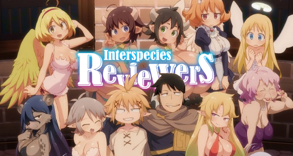
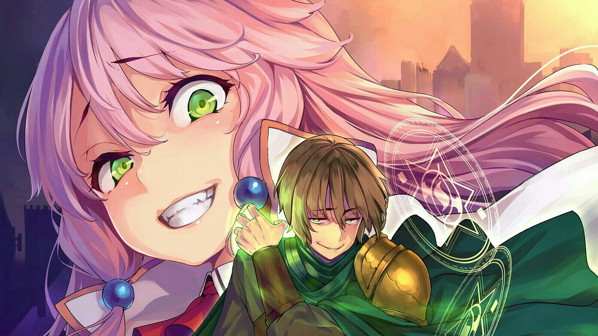
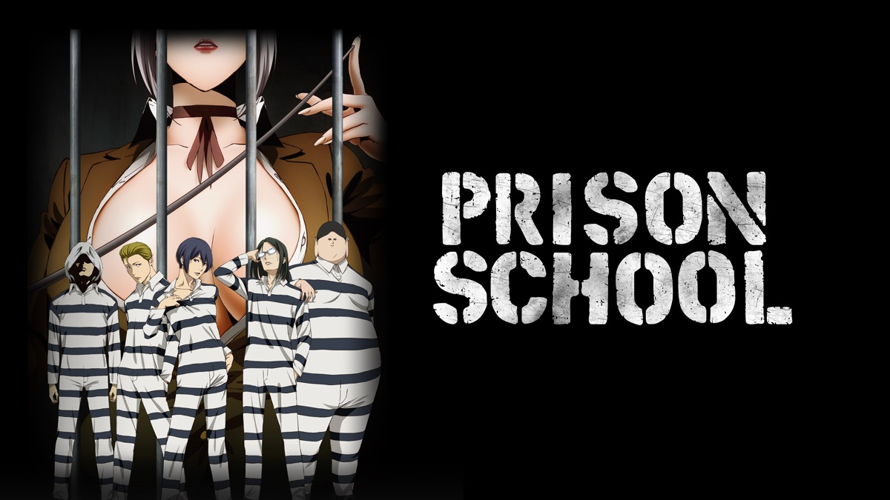
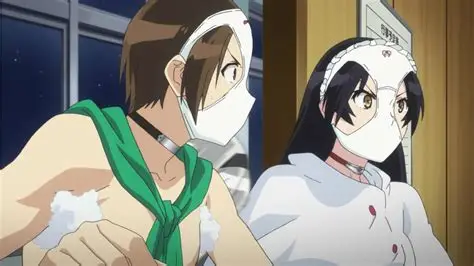
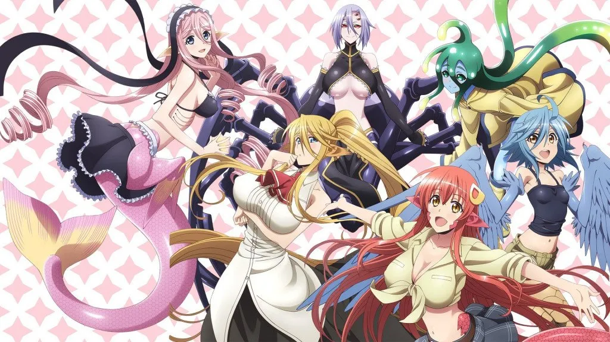
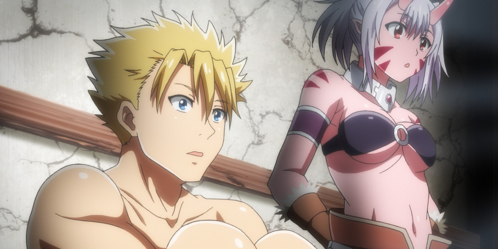
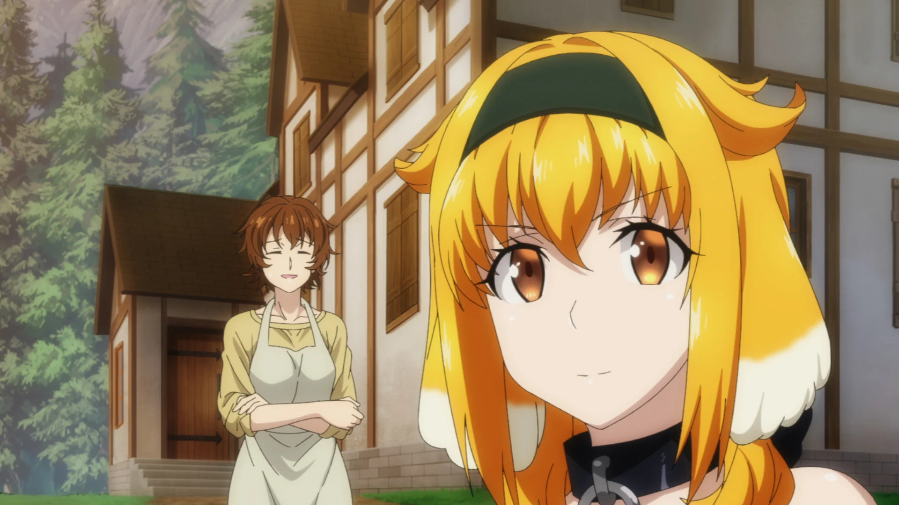
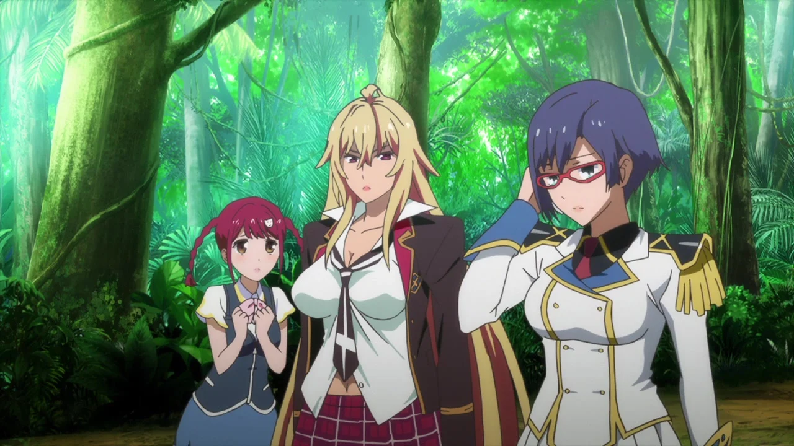
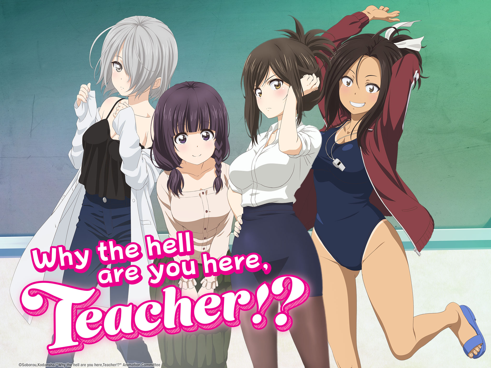

SMASH Senpai
Top 10 Ecchi Anime That Pushed TV Broadcast Limits
Ecchi anime has always lived on the edge of what television networks are willing to allow. While some series stay playful and suggestive, others push so far that broadcasters are forced to step in.
Over the years, several ecchi anime faced heavy censorship, late-night restrictions, or were removed entirely from TV schedules after crossing broadcast guidelines.
These controversies weren’t always about shock value alone. Some shows challenged censorship standards, others blurred the line between comedy and adult content, and a few sparked backlash almost immediately after airing.
In many cases, edited versions replaced the originals, scenes were cut or blurred, and international releases differed dramatically from their original broadcasts.
This list focuses on ecchi anime that didn’t just flirt with limits — they pushed them. These are the Top 10 Ecchi Anime that tested how far TV censorship could stretch.
Sponsored
#1 Interspecies Reviewers
Interspecies Reviewers became one of the most infamous ecchi anime of all time not because of subtle fan service, but because it pushed explicit content far beyond what television networks expected. On the surface, it presents itself as a fantasy comedy, following adventurers who review different establishments run by various fantasy species.
What shocked broadcasters was how unapologetic the anime was. Each episode leaned heavily into explicit situations, detailed implications, and visual content that left little to the imagination. Several TV stations that initially agreed to air the series dropped it mid-season after public backlash and internal reviews.
Unlike most ecchi anime, Interspecies Reviewers didn’t rely on innuendo alone. It treated adult themes as the core premise rather than a side joke. This made it impossible for networks to reframe or lightly censor without fundamentally breaking the show.
The controversy surrounding its removal sparked widespread discussion about broadcast standards and age ratings in modern anime. While streaming platforms eventually picked it up in limited regions, its sudden disappearance from television cemented its reputation as an ecchi anime that crossed a line broadcasters weren’t prepared to handle.
- Episode count: 12
- Genre: Fantasy, Comedy, Ecchi
- Broadcast issue: Pulled from multiple TV networks
- Core theme: Testing the limits of TV censorship

play anime smash or pass here (not sponsored)
SMASH SENPAI – Smash or Pass#2 Redo of Healer
Redo of Healer is one of the most controversial anime releases of the last decade, instantly drawing attention for content that shocked both viewers and broadcasters. While framed as a dark fantasy revenge story, the series quickly became known for scenes that pushed censorship boundaries.
The story follows a healer who is betrayed, abused, and exploited, then given a chance to reset time and take revenge. What made the anime explosive was not just its premise, but how graphically it portrayed its themes. Many broadcasters were forced to air heavily censored versions or restrict the series to late-night slots.
Several regions refused to broadcast the uncensored version entirely. Instead, multiple cuts were created, each removing more content to meet local regulations. This led to widespread debate about whether the series crossed the line between dark storytelling and exploitation.
Redo of Healer became a clear example of how modern ecchi anime can still face strict limitations despite streaming dominance. Its broadcast restrictions and warning labels ensured it would remain one of the most discussed and divisive anime releases in recent memory.
- Episode count: 12
- Genre: Dark Fantasy, Ecchi, Psychological
- Broadcast issue: Extreme censorship and restricted airing
- Core theme: Revenge without restraint
Sponsored
#3 Prison School
Prison School is often remembered as a comedy, but during its original broadcast, it quickly gained a reputation for pushing ecchi content to uncomfortable extremes. Set in a formerly all-girls academy, the series follows a group of male students subjected to brutal and humiliating punishments.
What made Prison School controversial wasn’t just fan service, but how explicitly it blended sexual imagery with dominance and humiliation. Many scenes were far more graphic than typical TV anime, forcing broadcasters to apply heavy censorship or restrict the show to adult-only time slots.
International releases often featured edited versions, with visual obstructions and scene cuts that significantly altered the viewing experience. Despite this, the anime remained wildly popular, proving that controversy can amplify attention rather than suppress it.
Prison School sits at a unique point in ecchi history. It balanced shock value, satire, and absurd humor, while consistently testing how much fan service television audiences were willing to tolerate. Its broadcast challenges made it a landmark in discussions about censorship and creative freedom.
- Episode count: 12
- Genre: Comedy, Ecchi, School
- Broadcast issue: Heavy censorship and adult time slots
- Core theme: Comedy taken to uncomfortable extremes
#4 High School DxD

High School DxD is one of the most recognizable ecchi anime ever created, and its reputation comes almost entirely from how openly it embraces fan service. What begins as a supernatural action series quickly establishes itself as a show where sexual imagery is not a side element, but a core part of its identity.
The story follows Issei Hyoudou, a high school student reincarnated as a devil, surrounded by powerful female characters. While the anime includes battles and mythology, many scenes were considered too explicit for standard television broadcasts. As a result, several regions aired censored versions, covering or altering visuals to meet broadcast standards.
High School DxD became notorious for having multiple versions per season — a TV version, a partially uncensored version, and a fully uncensored home release. This alone highlights how far the anime pushed limits compared to typical ecchi series.
Despite censorship, the anime gained massive popularity worldwide. Its success proved that extreme fan service could coexist with long-running franchises, while also showing how broadcasters continue to draw hard lines around sexual content.
- Episode count: 48+ (multiple seasons)
- Genre: Action, Supernatural, Ecchi
- Broadcast issue: Heavy censorship across regions
- Core theme: Power, desire, and excess
Sponsored
#5 Shimoneta: A Boring World Where the Concept of Dirty Jokes Doesn’t Exist
Shimoneta takes a unique approach to ecchi anime by focusing less on visuals and more on explicit language and sexual humor. Set in a dystopian society where all obscene speech and behavior are banned, the anime revolves around characters who rebel using dirty jokes as protest.
While the concept is comedic, the execution quickly raised red flags for broadcasters. The anime features nonstop sexual references, explicit dialogue, and taboo jokes that made it difficult to air without heavy censorship. In several regions, entire scenes were muted, edited, or removed altogether.
What made Shimoneta particularly controversial was how directly it criticized censorship itself. The anime intentionally exaggerated restrictions on expression, which caused discomfort among networks already struggling to justify airing it.
As a result, Shimoneta faced broadcast limitations and strict age ratings despite its animated format. It remains a standout example of how ecchi anime can provoke controversy without relying solely on fan service imagery, instead using language as its primary weapon.
- Episode count: 12
- Genre: Comedy, Ecchi, Satire
- Broadcast issue: Censorship of dialogue and scenes
- Core theme: Freedom of expression vs control
#6 Monster Musume: Everyday Life With Monster Girls
Monster Musume is an ecchi anime that revolves almost entirely around exaggerated fan service and suggestive scenarios. The series follows a human protagonist living with multiple monster girls, each designed to push visual and thematic boundaries.
From its earliest episodes, Monster Musume faced broadcast challenges. Many scenes featured prolonged close-ups, exaggerated anatomy, and explicit situations that required visual censorship. Several TV networks aired modified versions, while others restricted it to late-night time slots.
Unlike action-focused ecchi anime, Monster Musume places fan service at the center of its appeal. This made it difficult for broadcasters to justify minimal edits without fundamentally altering the show. As a result, multiple censored versions circulated internationally.
Despite these restrictions, the anime gained a loyal fanbase and strong home media sales. Its success demonstrated how niche ecchi content could thrive even when television exposure was limited, reinforcing the ongoing tension between creative freedom and broadcast regulations.
- Episode count: 12
- Genre: Comedy, Fantasy, Ecchi
- Broadcast issue: Visual censorship and restricted airing
- Core theme: Fan service without restraint
Sponsored
#7 Peter Grill and the Philosopher’s Time
Peter Grill and the Philosopher’s Time gained attention almost immediately for pushing sexual content far beyond what most TV networks were prepared to handle. While framed as a fantasy comedy, the anime revolves almost entirely around explicit situations disguised as plot progression.
The story follows Peter Grill, the strongest warrior in the world, who becomes the target of multiple women seeking his genetics. Rather than relying on implication, the anime frequently presents direct sexual scenarios, leading to widespread censorship across televised versions.
Most broadcasters aired a heavily edited version, removing or obscuring entire scenes. Even then, the content proved too explicit for some regions, forcing late-night scheduling or limited distribution. Uncensored versions were restricted to home releases and select platforms.
What makes Peter Grill controversial is how unapologetic it is. It makes no attempt to disguise its intent, instead leaning fully into shock and excess. This approach secured its place as one of the most censored modern ecchi anime in recent years.
- Episode count: 12+
- Genre: Fantasy, Comedy, Ecchi
- Broadcast issue: Heavy scene censorship
- Core theme: Desire taken to absurd extremes
#8 Harem in the Labyrinth of Another World
Harem in the Labyrinth of Another World blurred the line between ecchi anime and adult animation. While marketed as an isekai adventure, it quickly became known for explicit scenes that pushed far beyond standard fan service.
The series follows a protagonist reborn in another world, where combat, slavery, and sexual relationships are treated with unsettling directness. Several episodes featured content that could not be aired uncensored on television, leading to multiple edited versions across regions.
Broadcasters implemented heavy visual blocks, scene cuts, and audio censorship. Some platforms restricted the anime entirely, citing concerns about explicit depictions and moral boundaries.
Despite this, the anime gained popularity for its refusal to soften reality. It became a clear example of how modern isekai can collide with broadcasting standards, forcing networks to draw firm limits on how far sexual content is allowed to go.
- Episode count: 12
- Genre: Isekai, Fantasy, Ecchi
- Broadcast issue: Multiple censored versions
- Core theme: Fantasy without restraint
#9 Valkyrie Drive: Mermaid
Valkyrie Drive: Mermaid is one of the most extreme examples of ecchi anime crossing into controversial territory. From its opening episode, the series makes its intentions clear through explicit imagery and suggestive themes.
The premise centers around combat transformations triggered by intimate physical contact. This mechanic resulted in scenes that many broadcasters deemed inappropriate for any standard TV slot. Several regions imposed heavy censorship or avoided airing the series entirely.
Even compared to other ecchi titles, Valkyrie Drive stood out for its lack of subtlety. Scenes were frequently edited, blurred, or replaced with cutaways, creating noticeable differences between TV and home releases.
While critics questioned its narrative depth, the anime became infamous for how openly it challenged content regulations. It remains a textbook case of how far fan service can be pushed before broadcasters intervene.
- Episode count: 12
- Genre: Action, Ecchi, Sci-Fi
- Broadcast issue: Severe censorship
- Core theme: Intimacy as power
#10 Why the Hell Are You Here, Teacher!?
Why the Hell Are You Here, Teacher!? became controversial not only for its sexual content, but for the taboo situations it portrayed. The anime revolves around accidental encounters between students and teachers that quickly escalate into explicit scenarios.
Due to the sensitive nature of its premise, broadcasters implemented extreme censorship. Many TV versions featured black screens, heavy visual obstructions, and audio cuts that made scenes nearly unwatchable.
Several regions restricted the anime to late-night slots or refused to air it at all. Uncensored versions were limited to home media and niche streaming platforms, further reinforcing its controversial status.
While marketed as a comedy, the anime constantly tested legal and cultural boundaries. Its censorship became almost as famous as the show itself, making it one of the most edited ecchi anime of the modern era.
- Episode count: 13
- Genre: Comedy, Ecchi
- Broadcast issue: Extreme scene censorship
- Core theme: Taboo humor and controversy
Play Smash or Pass on SMASH Senpai.
 PLAY SMASH OR PASS
PLAY SMASH OR PASS